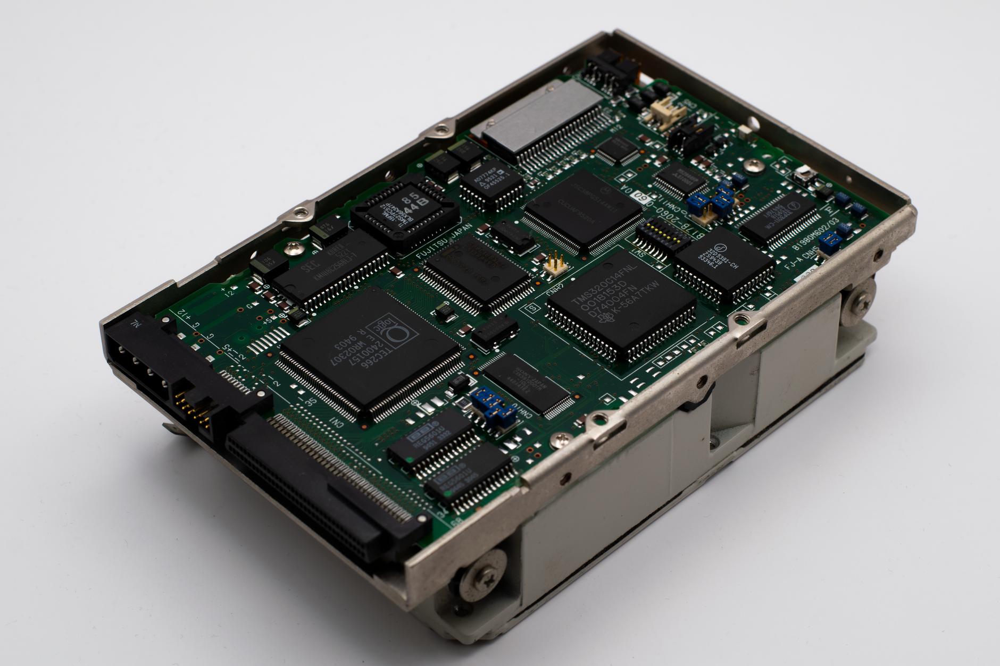

한국 반도체 생산 2배 목표, 미국 AI 자본 유치가 유일 변수

한국 정부는 2029년까지 반도체 생산능력을 2024년 대비 2배 수준으로 확대하고, 미국 빅테크·AI 인프라 기업의 국내 투자를 유치해 AI 공급망 허브로 도약한다는 5개년 로드맵을 공표했다. 구체적으로 용인·평택·화성 클러스터에 총 622조 원 규모의 국내외 투자를 집중시키는 계획이다.
카네기국제평화기금(Carnegie Endowment for International Peace)은 한국 대통령의 실리콘밸리 우선 방문을 분석하며, 이번 행보가 기술자본 유치와 핵심광물 확보를 동시에 노리는 '자원-기술 교환 외교'의 성격을 가진다고 평가했다. 엔비디아·구글·마이크로소프트 등과의 협의가 병행됐다.
이스트아시아포럼(East Asia Forum)은 한국 반도체 산업의 구조적 취약점으로 ①ASML EUV 장비 등 미국·네덜란드 장비 의존도 90% 이상, ②중국 시장 수출 제한(2023년 대비 HBM 대중 매출 30% 축소), ③신흥국 팹 진출 실적 미미 3가지를 동시에 지목했다. 생산 2배 목표가 판매처 다변화 없이는 공급 과잉으로 전환될 위험이 있다.
미국 AI 자본 유치의 핵심 전제는 미국 정부의 대한국 반도체 장비 수출 허가 유지와 AI 데이터센터 전력 인프라 확보다. 현재 용인 반도체 클러스터의 전력 수요는 2030년 기준 약 10GW로 추산되며, 한국 전체 발전 설비 용량(약 138GW)의 7.2%에 해당한다.
생산 2배 목표는 기술 역량보다 수요처 확보 여부로 성패가 갈린다. 미국 빅테크 AI 인프라 투자가 한국 팹에 실제 발주로 연결되려면, 한국이 단순 위탁생산(파운드리) 수준을 넘어 AI 최적화 패키징(HBM-on-Logic, 3D IC)까지 원스톱 제공할 수 있어야 한다.
핵심광물 균형 외교는 이 전략의 숨겨진 레버다. 브라질(니오비움·리튬), 중앙아시아 5국(크롬·우라늄), 멕시코(구리·아연)와의 자원 협력이 완성되면 한국은 미국 AI 공급망에 '소재-칩-패키징' 전 단계를 제공할 수 있는 유일한 비중국 국가로 포지셔닝될 수 있다.
삼성전자·SK하이닉스 — 미국 빅테크의 AI 인프라 투자가 국내 팹 발주로 이어지면, HBM4 단가 기준 패키지당 600~800달러 수준의 고부가 제품 매출 비중이 2027년까지 전체의 35~40%로 확대될 전망이다.
한국 소재 후방 공급사 — 정부의 622조 원 투자 클러스터 조성 과정에서 CMP 슬러리, 포토레지스트, 특수가스 등 국산화율 30% 미만 품목의 국내 공급사가 직접 수혜를 받는다. 동진쎄미켐·솔브레인·이엔에프테크놀로지 등이 해당 카테고리에 포함된다.
중국 파운드리 — SMIC를 포함한 중국 파운드리는 미국 장비 접근이 막힌 상태에서 한국이 생산 2배 목표를 달성하면 28nm 이하 공정 경쟁력 격차가 더 벌어진다. 현재 SMIC의 최선단 공정은 7nm 수율이 50% 내외로 추산된다.
한국 2차 공급사(장비·소재 중소기업) — 622조 원 투자의 실제 집행 속도가 전력 인프라 완공(2028년 이후 예상)에 발목 잡히면, 하청 발주 지연으로 중소 협력사 캐시플로우 위기가 2026~2027년에 집중될 수 있다.
미국 AI 자본 유치 전략의 수혜를 직접 받으려면, 단순 소재 납품이 아니라 AI 반도체 패키징 공정(HBM 기판 소재, 이방성 도전필름, 언더필 에폭시)에 대응 가능한 제품 라인업을 갖춰야 한다. 2025~2026년이 포트폴리오 전환의 실질적 마지노선이다.
핵심광물 외교 성과물(브라질 리튬, 중앙아 크롬)이 실제 장기 공급계약으로 전환되는 시점을 추적해야 한다. MOU 수준에서 Take-or-Pay 계약으로 격상되면 한국 배터리·소재사의 원가 예측 가능성이 획기적으로 개선된다. 현재는 MOU 단계에 머물러 있다.
실제 조달 현장에서는 — 미국 빅테크 구매팀이 한국 공급사를 평가할 때 '팹 생산능력'보다 '공급망 투명성 보고서(Scope 3 탄소 포함)'를 먼저 요청하는 사례가 늘고 있다. 622조 원 투자의 과실을 실제로 가져가려면, 제품 스펙과 함께 전 공정 탄소발자국 데이터를 2025년 내 구축해두는 것이 수주 조건의 실질적 전제가 됐다.
이 포스팅은 쿠팡 파트너스 활동의 일환으로 수수료를 제공받습니다.